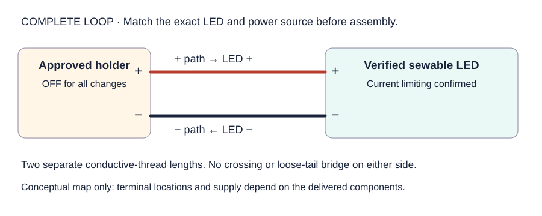
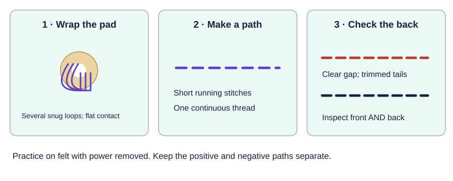

For each active pair, stage one mentor-built, known-good LED circuit. For each student, prepare a small felt practice pad, a tested needle, and a short conductive-thread length. Keep one complete spare circuit at the station.
Verified sewable LEDs; compatible switched holders and batteries; prototype-approved current limiting and connections.
Large +/− labels; a complete-loop example; open/reversed examples; an unpowered crossing/loose-tail sample.
Known-good spare parts, labels, INSPECT bin, and iPad for the evidence photo.
Identify the delivered electronics before powering. Record the exact LED/module, rated supply, current-limiting method, holder, and battery type/count. A sewable-looking board does not prove it has a resistor. Do not substitute the NeoPixel three-cell holder or a raw LED without a verified circuit design.
See supply photos6 reference photos · tap to identify
Product/reference photos, not our delivered inventory. Tap a photo to enlarge it. Compare the actual labels and kit list; appearance alone does not confirm electrical compatibility. These optional photos stay out of printouts.
LED/module and rating: ____________________ Holder + battery type/count: ____________________ Current limiting (built in or specified external part): ____________________ Tested by / date / matching kit label: ____________________
Confirm the combination. Tri checks the delivered component specifications and compatible power/current limiting. If identification is unresolved, run only the unpowered path/stitching lesson and a documented demonstration.
Mark the circuit on felt. Arrange + and − terminals so two distinct paths stay well separated on the front and back. Match the manufacturer’s actual terminal positions.
Assemble with power isolated. Remove batteries or disconnect the source. Use separate thread lengths for positive and negative paths; make snug pad loops and secure short tails. Any required external resistor belongs in the verified design.
Inspect, then test. Trace the complete loop on both sides. A mentor installs power and briefly tests. Light must remain steady without squeezing, with no warmth, odor, or loose contacts.
Prepare the teaching samples. Label the known-good circuit and spare. Keep deliberately crossed/loose-tail faults unpowered. Photograph the approved real assembly and keep that photo beside the kit; the schematic below is only a concept map.
Trace the loop and practice the connection.

Use the supplied schematic to explain the loop. Follow actual component documentation for power and physical terminal placement.

Unpowered practice: several snug loops touch the metal pad, then one continuous thread makes a flat path. Trim conductive tails so they cannot bridge the gap.
Before any repair or stitch: holder off and batteries removed or supply disconnected. Inspect both felt sides before each mentor-approved powered test. Keep loose coin cells under adult control. Stop for heat, odor, damage, or a light that needs pressure to work.
Use the illustrated sewing reference.
SparkFun E-Sewing guide
Photo instructions for thread, pad connections, running stitches, and circuit checks. The photographed LilyPad parts and coin-cell setup may differ from our order; copy the sewing technique only after our components are verified.
Check power/switch, polarity, then contacts. Substitute one known-good part from the matching design.
Flicker or pressure-dependent light
Power off and put the circuit in INSPECT. Use the whole working spare.
Crossed thread, fuzz bridge, or long tail
Do not power it. Separate the paths, secure/trim tails, and inspect both sides again.
Still unresolved after 60–90 seconds
Swap the complete prepared circuit; record the symptom for later diagnosis.
Warmth, odor, or damage
Stop and isolate the whole system. Tri inspects it before any reuse.
Release and reset checklist.
Print: this guide for the Circuit Lab lead, the existing Circuit Lab station card, and the shared checklist. Review the supply guide while checking delivered parts.